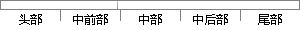

考虑到之前我们提到：用户是否在在使用期间改变行为，是否签订服务合约，是否为集团用户，同时办理的业务数量，以及我们最关心的客户的流失情况，通过表3.
片段位置图

相似结果|
1
原句片段：时办理的业务数量，以及我们最关心的客户的流失情况，通过表3.
相似片段 1：通过本知识点的学习了解客户流失的类型以及 客户流失...此时,如若提高价格, 那么靠低价建立起的业务关系必将...确认关键流失指标 3.公司内部数据采集(销售情况) ...
|
※ 片段修改建议 ※
近似词参考：- 之前：以前
- 我们：咱们
- 是否：是不是
- 期间：时代 时期
- 改变：转变 扭转
- 行为：行动 举动
- 是否：是不是
- 签订：签定 签署
- 服务：办事
- 是否：是不是
- 集团：团体
- 办理：打点 管理 解决
- 业务：营业
- 数量：数目
- 以及：和
- 我们：咱们
- 关心：体贴 关切
- 情况：环境 情形
- 通过：经由过程
系统自动生成语句：考虑到以前咱们提到：用户是不是在在使用时代转变行动，是不是签定办事合约，是不是为团体用户，同时打点的营业数目，和咱们最体贴的客户的流失环境，经由过程表3.
注：本片段修改建议为系统自动生成，仅供参考。